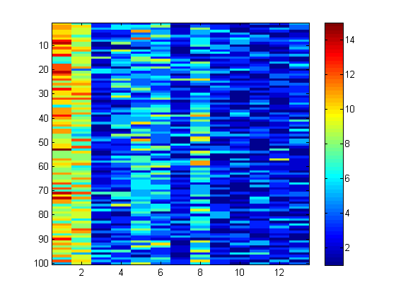
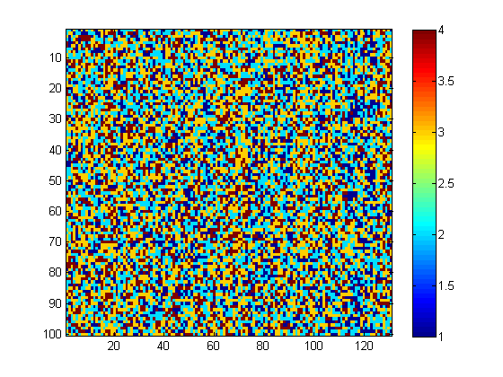

Contents
Demonstrate cutset conditioning in cyclic undirected markov chain
Based on http://www.cs.ubc.ca/~schmidtm/Software/UGM/cutset.html
% This file is from pmtk3.googlecode.com
Setup model with a single loop
nNodes = 13; nStates = 25; adj = zeros(nNodes); for i = 1:nNodes-1 adj(i,i+1) = 1; end adj(nNodes,1) = 1; adj = adj+adj'; if 0 labels = {'UBCLoop','UniversityBoulevard','AgronomyRoad',... 'EastMall','MainMall','HawthorneLane','StadiumRoad',... 'AgronomyRoad','UniversityBoulevard','NitobeMemorial',... 'WestMall','CrescentRoad','IonaDrive'}; drawNetwork('-adjMat',adj,'-nodeLabels',labels,'-undirected', true); printPmtkFigure('busNoHub') end busy = [10 8 0 3 5 4 0 5 0 0 0 0 0]; nodePot = zeros(nNodes,nStates); for n = 1:nNodes for s = 1:nStates nodePot(n,s) = exp(-(1/10)*(busy(n)-(s-1))^2); end end edgePot = zeros(nStates); for s1 = 1:nStates for s2 = 1:nStates edgePot(s1,s2) = exp(-(1/100)*(s1-s2)^2); end end cutset = 1; model = mrf2Create(adj, nStates, 'nodePot', nodePot, 'edgePot', edgePot, ... 'method', 'Cutset', 'cutset', cutset);
Unconditional inference
map = mrf2Map(model)-1 [nodeBel, edgeBel, logZ] = mrf2InferNodesAndEdges(model); setSeed(0); samples = mrf2Sample(model, 100); figure; imagesc(samples); colorbar;
map =
Columns 1 through 7
9 8 1 3 5 4 1
Columns 8 through 13
4 0 0 0 0 1
 Setup model with multiple loops
nNodes = 131; nStates = 4; adj = zeros(nNodes); % Route 1 (loop starting from node 1) for i = 1:12 adj(i,i+1) = 1; end adj(13,1) = 1; % Route 2 (loop starting from node 1) adj(1,14) = 1; for i = 14:29 adj(i+1,i) = 1; end adj(30,1) = 1; % Route 3 (loop starting from node 70) for i = 31:69 adj(i+1,i) = 1; end adj(70,31) = 1; % Route 4 (loop starting from node 81) for i = 71:80 adj(i,i+1) = 1; end adj(81,71) = 1; % Route 5 (loop through nodes 1 and 70) adj(1,82) = 1; for i = 82:90 adj(i,i+1) = 1; end adj(91,70) = 1; adj(70,92) = 1; for i = 92:99 adj(i,i+1) = 1; end adj(100,1) = 1; % Route 6 (loop through nodes 1 and 81) adj(1,101) = 1; for i = 101:110 adj(i,i+1) = 1; end adj(111,81) = 1; adj(81,112) = 1; for i = 112:120 adj(i,i+1) = 1; end adj(121,1) = 1; % Route 7 (direct path from 70 to 81) adj(70,122) = 1; for i = 122:130 adj(i,i+1) = 1; end adj(131,81) = 1; adj = adj+adj'; if 0 clf; for i = 1:nNodes labels{1,i} = 's'; end labels{1} = 'H'; labels{70} = 'H'; labels{81} = 'H'; drawNetwork('-adjMat',adj,'-nodeLabels',labels,'-undirected', true); printPmtkFigure('busloopHubs') end busy = floor(rand(nNodes,1)*nStates); nodePot = zeros(nNodes,nStates); for n = 1:nNodes for s = 1:nStates nodePot(n,s) = exp(-(1/10)*(busy(n)-(s-1))^2); end end edgePot = zeros(nStates); for s1 = 1:nStates for s2 = 1:nStates edgePot(s1,s2) = exp(-(1/10)*(s1-s2)^2); end end cutset = [1 70 81]; model = mrf2Create(adj, nStates, 'nodePot', nodePot, 'edgePot', edgePot, ... 'method', 'Cutset', 'cutset', cutset);
Unconditional inference
map = mrf2Map(model)-1 [nodeBel, edgeBel, logZ] = mrf2InferNodesAndEdges(model); setSeed(0); samples = mrf2Sample(model, 100); figure; imagesc(samples); colorbar;
map =
Columns 1 through 7
2 1 1 2 2 2 2
Columns 8 through 14
1 2 2 2 1 1 1
Columns 15 through 21
2 2 3 3 3 3 2
Columns 22 through 28
1 1 1 2 2 2 1
Columns 29 through 35
1 2 2 2 2 2 2
Columns 36 through 42
2 2 2 1 1 1 2
Columns 43 through 49
2 2 2 2 1 1 1
Columns 50 through 56
1 1 1 1 2 2 1
Columns 57 through 63
1 1 2 2 2 2 2
Columns 64 through 70
2 2 2 2 2 2 2
Columns 71 through 77
2 2 2 1 1 2 1
Columns 78 through 84
1 1 1 2 1 2 2
Columns 85 through 91
2 2 2 1 1 1 1
Columns 92 through 98
2 2 2 2 2 2 3
Columns 99 through 105
3 3 1 1 1 1 2
Columns 106 through 112
2 1 1 2 2 1 2
Columns 113 through 119
2 1 1 0 0 0 0
Columns 120 through 126
1 1 1 1 1 1 1
Columns 127 through 131
2 2 2 2 2
